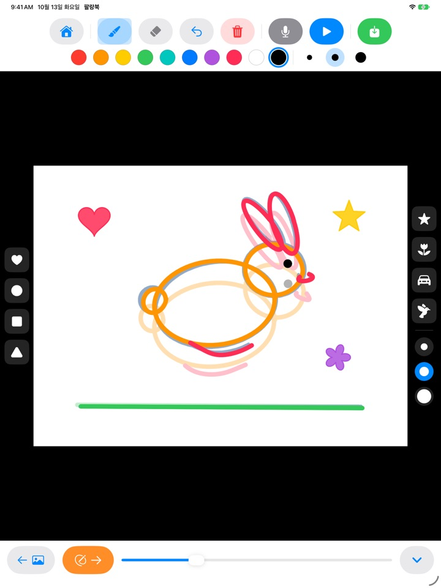
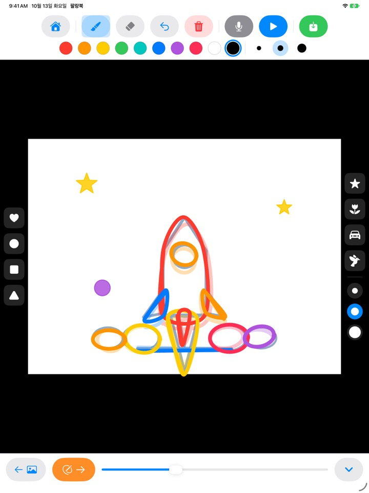
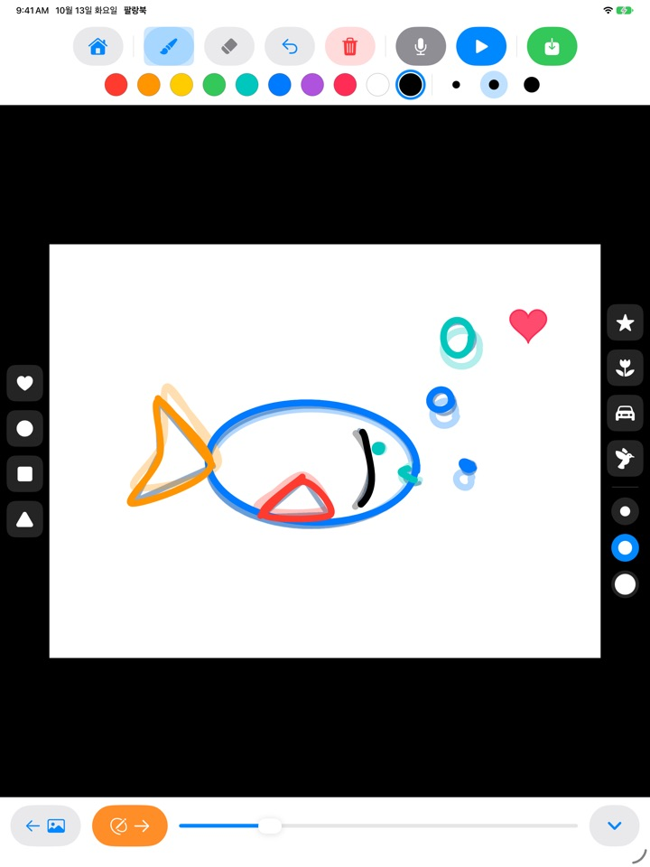
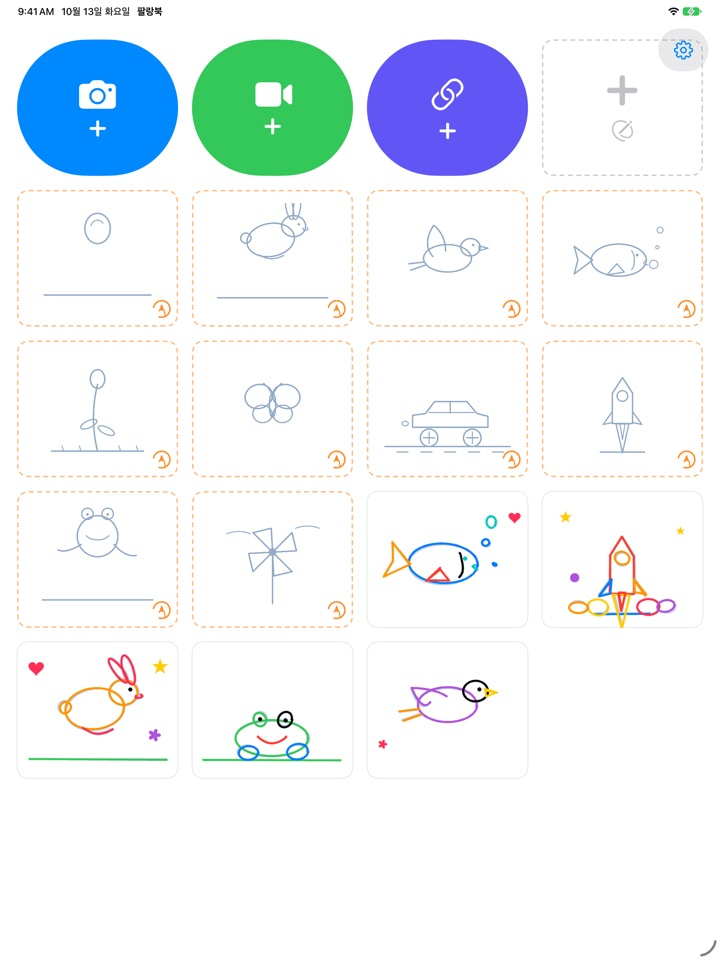

따라 그린 그림이
팔랑팔랑 움직여요
연한 밑그림을 한 장씩 따라 그리고 재생을 누르면, 밑그림은 사라지고 아이가 그린 선만 움직여요. 모든 버튼이 그림이라 글을 몰라도 혼자 할 수 있어요.
아이패드 전용이에요. 따라 그리기 3세트는 무료예요.

한 장씩 그려 보세요
한 장 그리고 주황 화살표로 다음 장으로 넘기세요. 앞 장이 흐리게 비쳐요. 두세 장 그린 뒤 파란 재생을 누르면 그림이 움직여요.
아이가 그린 그림, 한 장으로 끝나기 아깝지 않나요?
애니메이션은 비슷한 그림을 조금씩 바꿔 여러 장 그려야 해서 아이 혼자서는 어디부터 그려야 할지 막막해요. 팔랑북은 움직임이 담긴 연한 밑그림을 깔아 주니, 아이는 선을 따라가기만 하면 돼요. 재생을 누르는 순간 내 그림이 움직이는 걸 봐요.
선만 따라가면 애니메이션
통통 튀는 공, 깡충 뛰는 토끼, 나는 새, 헤엄치는 물고기, 피어나는 꽃, 나비, 달리는 자동차, 날아오르는 로켓, 개구리, 바람개비. 세트마다 밑그림이 약 20장 들어 있어요.
앞 장 그림이 흐리게 비쳐서 다음 장을 이어 그리기 쉽고, 재생하면 밑그림은 사라지고 아이 그림만 움직여요.

도장 콕, 색은 열 가지
하트, 동그라미, 네모, 세모, 별, 꽃, 자동차, 새 도장을 콕 찍어 꾸며요. 도장 크기와 붓 굵기는 세 가지씩, 색은 열 가지예요.
지우개와 되돌리기가 있어서 틀려도 금방 다시 그려요. 손가락으로도, Apple Pencil로도 그려요.

내 동영상 위에도, 빈 종이에도
직접 찍은 동영상이나 사진 앱의 동영상을 불러와 그 위에 따라 그릴 수 있어요. 배경을 가리면 그림을 그린 장면만 흰 종이 위에서 이어져 재생돼요. 밑그림 없이 하얀 종이에 마음대로 그리는 플립북도 있어요.
마이크를 누르면 아이 목소리를 녹음해 함께 담고, 완성한 작품은 동영상으로 사진 앱에 저장해 가족과 나눠요.

시작은 세 단계면 돼요
- 1
밑그림 카드를 눌러요
홈 화면의 주황 점선 카드가 따라 그리기예요.
- 2
한 장 그리고 넘겨요
주황 화살표를 누르면 다음 장으로 넘어가요.
- 3
재생을 눌러요
파란 재생 버튼을 누르면 내 그림이 움직여요.
버튼 안내
- 주황 점선 카드
- 밑그림 따라 그리기 시작
- 회색 점선 카드
- 빈 종이 플립북
- 파란 카메라
- 직접 찍은 동영상으로 그리기
- 초록 비디오
- 사진 앱의 동영상 불러오기
- 남색 링크
- 동영상 파일 링크를 붙여 넣어 열기
- 주황 화살표
- 다음 장으로
- 파란 재생
- 애니메이션 재생, 다시 누르면 멈춤
- 굽은 화살표
- 마지막 선 되돌리기
- 빨간 휴지통
- 이 장을 통째로 지우기 (되돌리기로 살릴 수 있어요)
- 마이크
- 반복 재생되는 동안 목소리 녹음
- 비디오 아이콘
- 동영상 배경 가리기 (분홍 빗금이 되면 그림만 재생)
- 초록 저장
- 사진 앱에 동영상으로 저장
작품을 지우려면 홈 화면에서 작품 카드를 길게 누르세요. 그림, 녹음, 불러온 동영상이 함께 지워져요.
무료로 충분히 해 보고, 마음에 들면 평생 이용권
무료
- 따라 그리기 3세트 (공, 토끼, 꽃)
- 작품 3개 보관
- 동영상 1번 불러오기
- 빈 종이 플립북 10장까지
- 목소리 녹음 15초까지
- 도장, 색, 붓, 사진 앱에 저장
평생 이용권
- 따라 그리기 전 세트, 앞으로 나올 세트까지
- 작품, 장수, 동영상, 녹음 시간 제한 없음
- 저장한 영상 끝의 팔랑북 카드 빠짐
구독이 아닌 한 번 결제예요. 가족 공유로 온 가족 아이패드에서 함께 써요.
무료로 저장한 영상 끝에는 짧은 팔랑북 카드가 붙어요. 평생 이용권이 생기기 전부터 팔랑북을 쓰시던 분은 모든 기능이 그대로 열려 있어요.
자주 묻는 질문
밑그림은 어떻게 쓰나요?
연한 하늘색 선이 밑그림이에요. 아이가 그 위를 따라 그리면 되고, 재생을 누르면 밑그림은 사라지고 아이가 그린 선만 움직여요. 약 20장을 다 그리면 완성이에요.
동영상 없이 내 그림만 재생하고 저장하고 싶어요.
동영상 작품에서 위쪽 도구줄의 비디오 아이콘을 눌러 분홍 빗금이 되면, 재생과 저장 모두 흰 배경에 그림만 나와요. 그림을 그린 장면만 이어서 재생되니, 긴 영상에서 몇 장만 그려도 짧은 애니메이션이 돼요.
완성한 영상은 어디에 저장되나요?
도구줄 오른쪽 끝의 초록 저장 버튼을 누르면 mp4 동영상이 사진 앱에 저장돼요. 처음 저장할 때 사진 접근 권한을 허용해 주세요.
목소리는 어떻게 넣나요?
마이크 버튼을 누르면 애니메이션이 반복 재생되는 동안 목소리가 녹음되고, 정지 버튼을 누르면 녹음이 끝나요. 다시 녹음하면 이전 녹음을 덮어써요. 저장하면 영상에 목소리도 함께 들어가요.
동영상 링크가 안 열려요.
인터넷 연결을 확인하고, 붙여 넣은 주소가 동영상 파일을 바로 가리키는 링크(.mp4 등으로 끝나는 주소)인지 확인해 주세요. 동영상 공유 사이트의 페이지 링크는 열 수 없어요. 저작권 보호를 위해 직접 찍은 영상이나 자유 이용 영상을 써 주세요.
손바닥이 닿아서 선이 그려져요.
굽은 화살표로 마지막 선을 지울 수 있고, 빨간 휴지통은 한 장을 통째로 지워요(되돌리기로 다시 살릴 수 있어요). 자주 그런다면 메일로 알려 주세요. 도와드릴게요.
결제 화면 전에 왜 계산 문제가 나오나요?
아이 혼자 결제 화면에 가지 않게 하려는 거예요. 아이가 잠긴 것을 누르면 큰 자물쇠와 "어른에게 보여 주세요"가 나오고, 어른이 곱셈 문제의 답을 입력해야 결제 화면이 열려요.
구매를 복원하려면요?
홈 화면 오른쪽 위 톱니바퀴를 누르고 평생 이용권을 고른 뒤, 어른 확인 문제를 풀고 구매 복원을 누르세요. 구매할 때와 같은 Apple 계정으로 로그인되어 있어야 해요.
앱에서 의견을 보내려면요?
홈 화면의 톱니바퀴를 누르고 피드백 보내기를 고르세요. 스크린샷을 붙일 수 있고, 답장을 원하시면 이름과 이메일을 남겨 주세요. 피드백은 보호자가 보내 주세요.
아이 정보를 모으나요?
아니요. 팔랑북은 어떤 개인정보도 모으지 않아요. 그림과 녹음은 이 아이패드에만 저장돼요. 자세한 내용은 개인정보처리방침을 확인해 주세요.
궁금한 점이나 문제가 있으면 mizzking75@gmail.com로 메일 주세요. 보통 2~3일 안에 답장드려요.